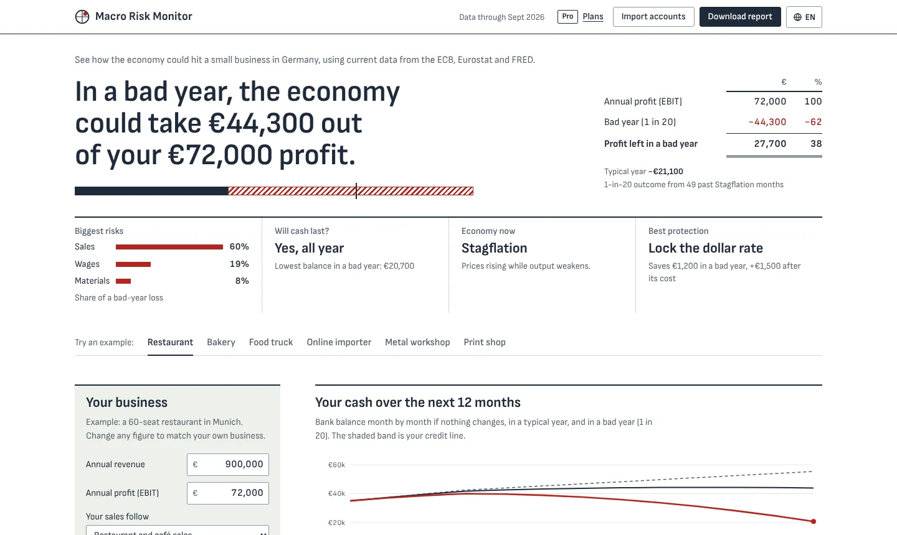

Macro Risk Monitor
Shows a small German business how much of next year's profit the economy could take, and which protection is worth paying for. Built as a two-person startup with Channappa, who leads the finance side.
- A pipeline of 21 series from the ECB, Eurostat and FRED, refreshed twice a month by GitHub Actions.
- Filtered historical simulation by economic regime, a hidden Markov model as a second opinion, and a backtest since 2008 that passes the Kupiec test.
- An AI assistant on Cloudflare Workers AI that never computes numbers itself: it calls the page's own model as tools, and client names never leave the browser.
- A portfolio stress test for banks and funds, 13 languages, and a page for tax advisors.
Stack: Python (pandas, NumPy, SciPy, hmmlearn), SQLite, JavaScript, Cloudflare Workers, GitHub Actions, Playwright